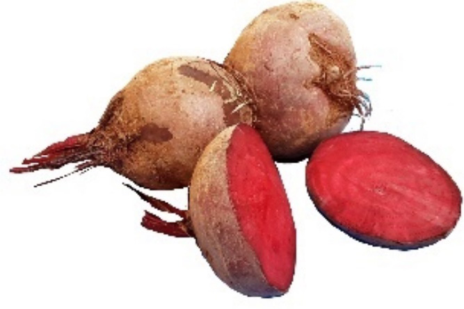
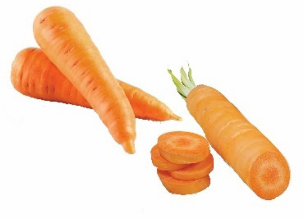

Painting colours from fruits and roots
There are different fruits and vegetables with natural colours. Examples of fruits and roots which can provide natural colours are carrots, grapes, ripped mangos, tomato leaves, henna leaves, beetroots and other related local materials available around your environment. Figure 3.20 shows beetroots and carrots which are good examples of roots providing natural colours.


Material needed for extracting colours from fruits and roots
The following are materials needed for extracting colours from fruits and roots:
- (a) Fruits and roots of different colours;
- (b) Small bowls or containers (one for each colour);
- (c) Wood glue;
- (d) Blender or traditional mortar and pestle;
- (e) Wooden spoon for stirring;
- (f) Painting brushes; and
- (g) Painting papers – ideally watercolour.
Procedures for extracting colours from fruits and roots
Fruits and roots are good sources of natural colours. The colours can be obtained from tomatoes, ripe mangoes, carrots and various other roots.